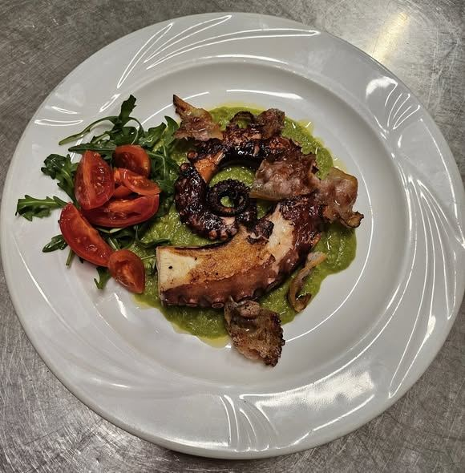
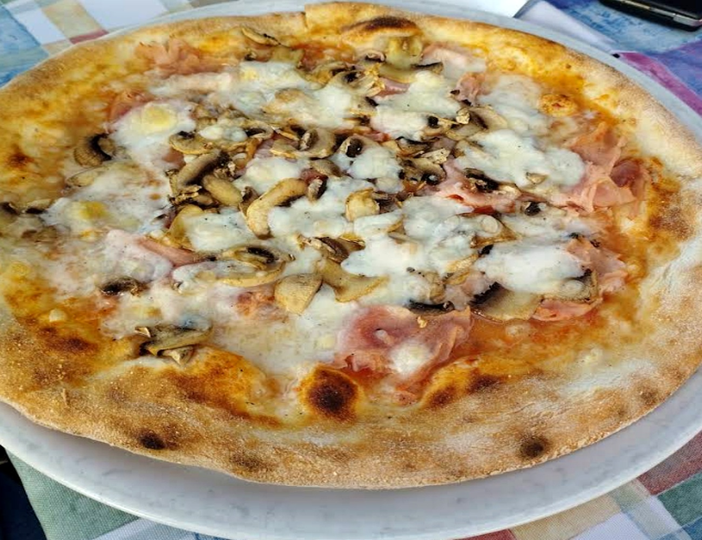
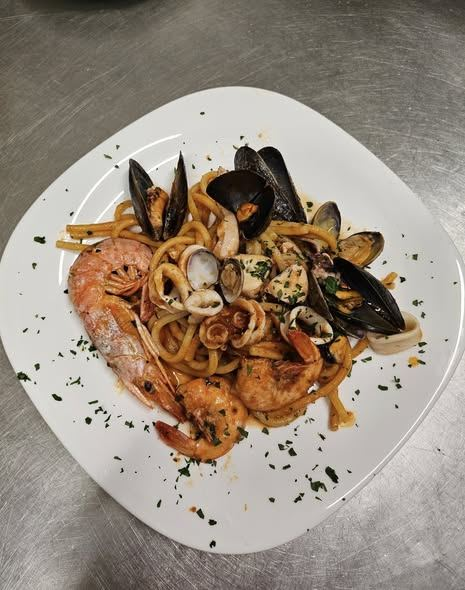
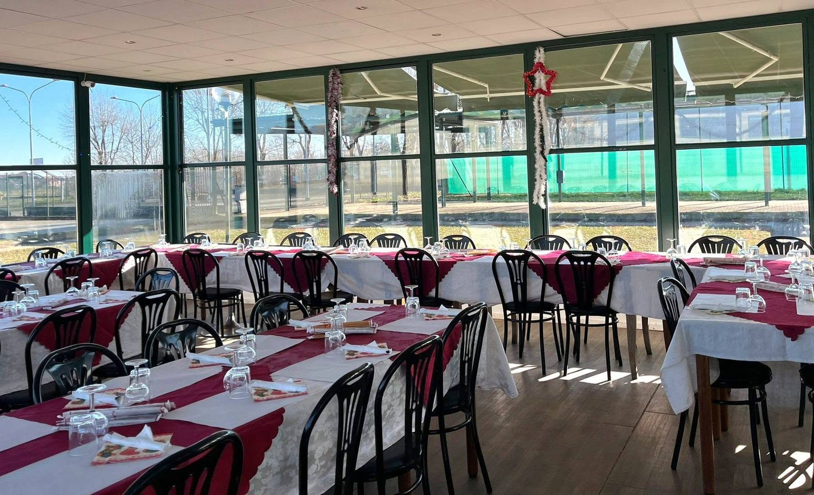
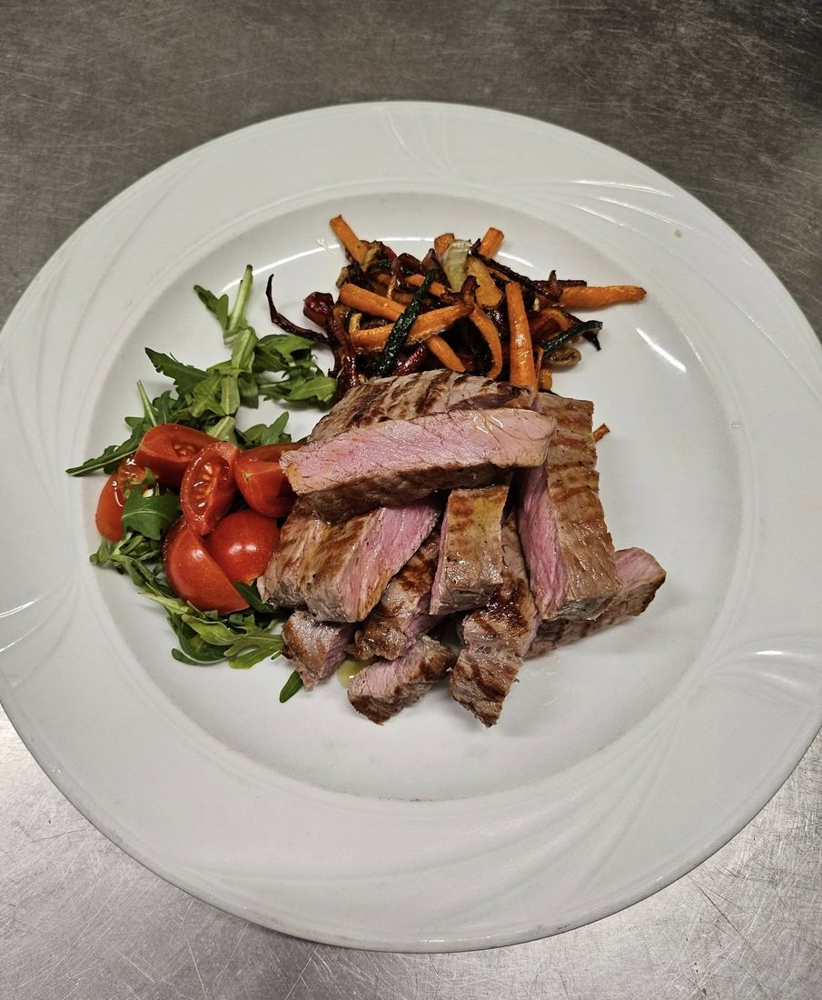
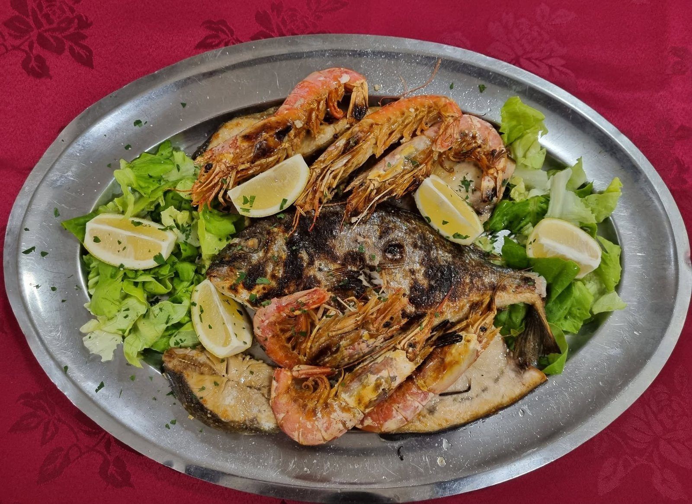
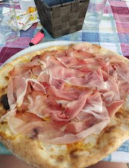
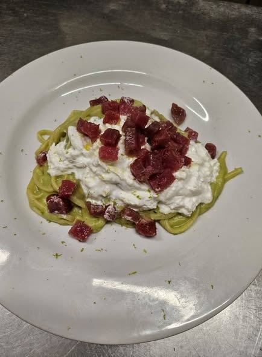

SPECIALITÀ DI MARE
Specialità di mare
Dal polpo alla griglia ai fritti di mare, il pesce è una presenza importante sulla nostra carta.
Scopri il menu →PISCINA · TORINO
Ristorante · Pizzeria · Specialità di mare
Pizza, cucina e specialità di mare.
Una tavola semplice, generosa e fatta per stare insieme.
Menu digitale costruito a partire dalla carta fornita del ristorante.
Sfoglia il menu →LA SOSTA
La Sosta è un ristorante e pizzeria a Piscina, all'interno dell'impianto sportivo comunale Renato Amè. Un locale informale, adatto a famiglie e gruppi, con spazi esterni e parcheggio.

DALLA CUCINA
Una selezione di piatti e pizze della nostra cucina.

SPECIALITÀ DI MARE
Dal polpo alla griglia ai fritti di mare, il pesce è una presenza importante sulla nostra carta.
Scopri il menu →
DALLA CUCINA
Cozze, vongole e gamberi portano i sapori del mare anche nei nostri primi piatti.
Scopri il menu →IL LOCALE
Spazi luminosi, tavoli per gruppi e una cucina che porta in tavola pizza, carne e specialità di mare.

PERCHÉ LA SOSTA
Dalla pizza alla cucina di mare, con spazio per stare insieme e tutto quello che serve per una serata senza complicazioni.
Dalle classiche alle pizze speciali e bianche.
Scopri il menu →Primi, secondi e piatti della tradizione.
Scopri il menu →Pesce alla griglia, fritti e pasta di mare.
Scopri il menu →Dehor, parcheggio, Wi‑Fi e servizio da asporto.
Vedi il locale →DALLA CUCINA
Carne, pesce e piatti della casa: una selezione per continuare a guardare il menu anche con gli occhi.




DOVE SIAMO
Via Buriasco 10/12
10060 Piscina (TO)
Orari indicati online
10:00 — 00:00 · tutti i giorni